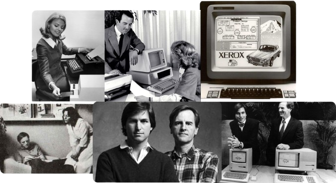

A Inovação e a Gestão no Vale do Silício: Lições da História da Xerox e John Sculley
Explore o legado da Xerox e de John Sculley, duas forças visionárias que moldaram
o futuro da tecnologia.

Bem-vindo à nossa experiência interativa!
Aqui, você terá a chance de testar seus conhecimentos sobre a empresa Xerox e o executivo
visionário
John Sculley, explorando curiosidades sobre a trajetória da Xerox e o impacto de Sculley no
mundo
dos negócios e da tecnologia. Além disso, aproveite para conhecer os criadores deste site e o
processo criativo por trás deste projeto. Descubra como unimos ideias, pesquisa e design para
trazer
esta experiência até você. Pronto para mergulhar nesse universo? Vamos começar!